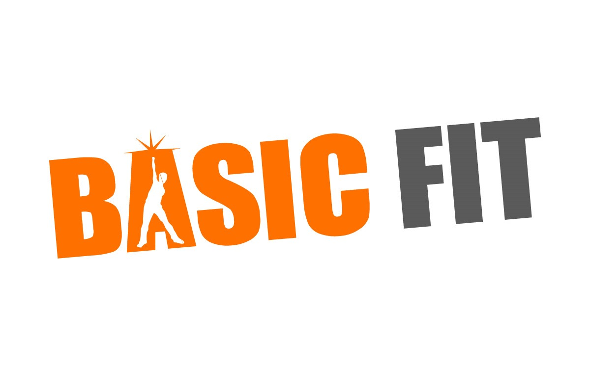

Hobby's & Bijzondere kwaliteiten
Open alle / Sluit alleTennissen
+
Ik tennis al sinds ik klein ben. Bijna heel mijn familie heeft getennist. Vroeger leerde ik van mijn vader, moeder en opa. Later ben ik gaan 1 keer per week gaan trainen. Dat heb ik heel lang gedaan, maar ben daar nu mee gestopt. Ik heb ook een tijd competitie gespeeld, maar ook dat doe ik niet meer. Toen ik trainde speelde ik ook af en toe mee met een toernooi, onder andere het ouder-kind toernooi met mijn vader. Nu ga ik nog af en toe vrij tennissen.
Programmeren
+
Ik heb vóór school nog weinig gedaan met programmeren, ik was een korte tijd bezig met een Arduino waarbij ik veel opzocht en het niet zo goed begreep. Ik wist wel ongeveer wat het deed, maar nog niet precies. Ik herken wel een aantal dingen van Arduino code in Javascript, bijvoorbeeld loopjes en een if else statement. Het heeft dus wel geholpen want daardoor leer ik nu bepaalde dingen sneller. Op school krijg ik nu HTML, CSS en Javascript en ik vind het leuk om te doen. Ik ben thuis graag bezig met programmeren en vind het leuk om dingen te bedenken en uit te werken, ook al zijn die soms iets te lastig :).

Naar de sportschool
+
Ik ga af en toe naar de sportschool en vind dat leuk om te doen. Ik vind het fijn om te bewegen en het is altijd fijn om er te zijn. Ik heb nu ongeveer 3/4 maanden een abonnement bij Basic-fit. Door covid-19 kan ik nu een tijd niet meer sporten helaas, maar als de sportscholen weer open zijn ga ik zeker weer langs.

Gamen
+
Ik vind het altijd leuk en relaxed om te gamen. Lekker bankhangen en spelletjes spelen. Ik speel op de Playstation 4 vooral schietspellen zoals Call of Duty (modern warfare), Fortnite en soms GTA V. Ik vind avontuur spellen ook wel leuk maar die speel ik niet zo veel. Ook vind ik het gezellig en leuk om met familie te kaarten of bordspelletjes te spelen.
Jongleren
+
Sinds kort ben ik af en toe aan het jongleren. Ik vind het leuk om te doen en zo kan ik tijdens school even ergens anders op concentreren en kijk ik even weg van mijn beeldscherm. Ook als ik me nergens op aan het concentreren ben of even weg wil kijken, vind ik het leuk om te jongleren en leer ik ook steeds meer trucjes.